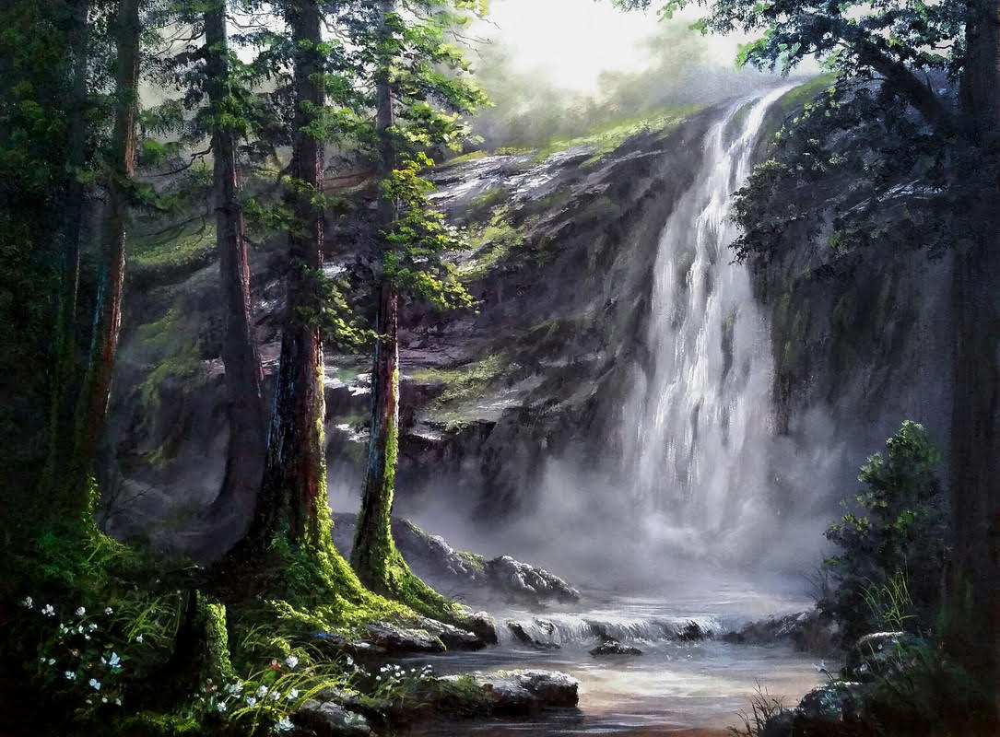

Buddha

I was always inspired by Budhha and wanted to make a painting that is relaxing and soothing - finally settled for this with Buddha statue. It resonates calm and peace to me. I choose oil paints and blending techniques. One of his inspiration quotes: Educate yourself to be a high ranking official of any entity. Every master starts as a servant. Keep learning to be promoted. But keep your feet always on the ground no matter what. Because the people you meet on your way up will be same people you will meet on your way down. Be humble.
City in the Night

This painting is inspired by famous artist Leonid Afremov.I have always created painting using brushes but this painting is different created just using palette knife.
River Front During Festival

Every evening around sunset, hundreds of people gather at River Front to witness the Ganga Aarti of Varanasi,India. The aarti is performed on a stage by seven young priests. The ceremony begins with the blowing of a conch shell and ringing bells. The priests each wave an incense stick and hold up large flaming lamps while chanting mantras to the goddess Ganga. Devotees float their Diyas on the holy water makes ceremony more beautiful and majestic.
Virginia Falls

Virginia Falls is one of my favorite hikes in Glacier National Park. A moderate trail passes by Baring Falls and St. Mary Falls before culminating at Virginia Falls, widely considered one of the best waterfalls in all of Glacier National Park for its turquoise waters and crystal pools perfect for dipping your feet in. .